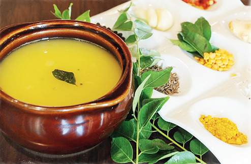

A TAMARIND HIGH
Rasam is the ultimate south Indian comfort food and top chefs are rustling it up using everything from raw mango and drumstick flowers to pineapple and grapefruit, says Rahul Verma
Now that the worst of the summer is behind us, I have begun dreaming of piping hot dishes. And one vision has been tempting me — that of a steel bowl of steaming rasam. Rasam warms you up, whets the appetite, gives you all kinds of nutrients — and tastes really good. Even though we now know all about sub-regional cuisine, a south Indian meal in a city north of the Vindhyas still mostly means a thali. The centre of the thali has a mound of rice with a papad on top. The sides are lined with bowls with rasam, sambar, vegetables, curd and a sweet dish. You drink up the invigorating rasam and are ready to take on the world. “Rasam is made in almost every south Indian home, traditionally with tamarind,” stresses Ajit Bangera, the senior executive chef at ITC Grand Chola, Chennai. “It’s called rasam in Tamil and Malayalam, saaru in Kannada, and charu and pulusu in Telugu.”